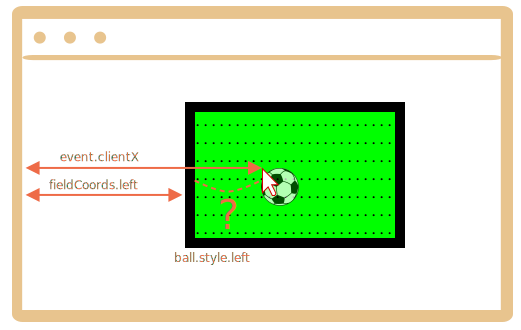

First we need to choose a method of positioning the ball.
We can’t use position:fixed for it, because scrolling the page would move the ball from the field.
So we should use position:absolute and, to make the positioning really solid, make field itself positioned.
Then the ball will be positioned relatively to the field:
#field {
width: 200px;
height: 150px;
position: relative;
}
#ball {
position: absolute;
left: 0; /* relative to the closest positioned ancestor (field) */
top: 0;
transition: 1s all; /* CSS animation for left/top makes the ball fly */
}Next we need to assign the correct ball.style.left/top. They contain field-relative coordinates now.
Here’s the picture:

We have event.clientX/clientY – window-relative coordinates of the click.
To get field-relative left coordinate of the click, we can substract the field left edge and the border width:
Normally, ball.style.left means the “left edge of the element” (the ball). So if we assign that left, then the ball edge, not center, would be under the mouse cursor.
We need to move the ball half-width left and half-height up to make it center.
So the final left would be:
The vertical coordinate is calculated using the same logic.
Please note that the ball width/height must be known at the time we access ball.offsetWidth. Should be specified in HTML or CSS.